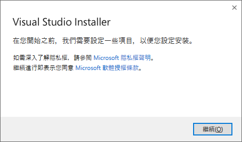
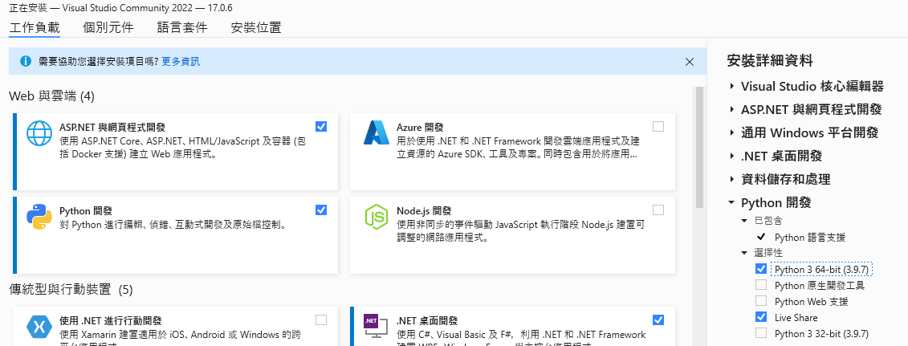
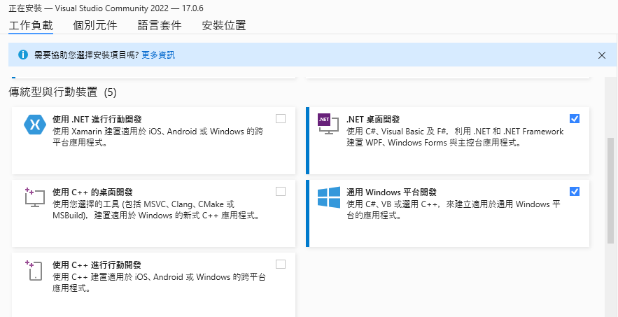
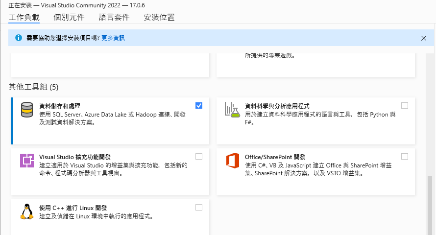
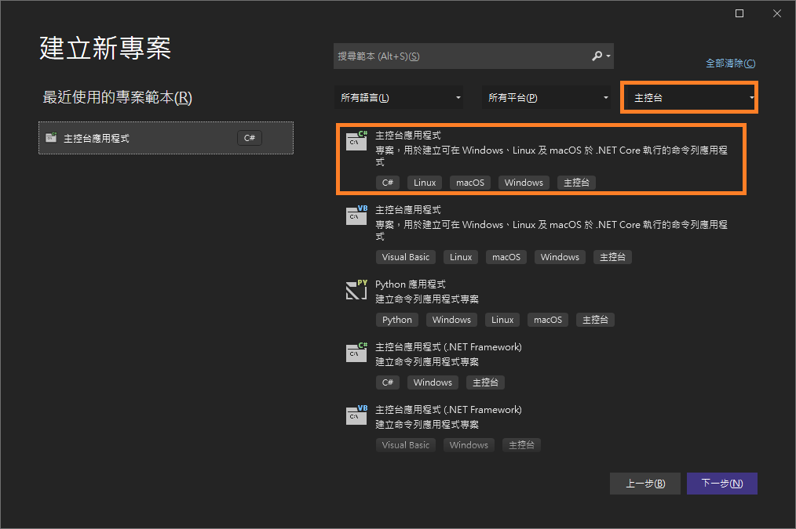

.NET是微軟開發的開放原始碼開發平臺，C#(發音C-Sharp)是.NET平台開發語言之一，不同於Python，C#是一物件導向且型別安全的程式設計語言。本課程簡要說明物件導向概念、C#語法及與Python的比較，同時課程將結合.NET MVC Web專案，讓同學能了解基本物件導向語言與基本前後端網頁設計。
請至.Net官網(https://dotnet.microsoft.com/en-us/download)下載並安裝.NET SDK x64版本。
請至Visual Studio官網(https://visualstudio.microsoft.com/zh-hant/vs/whatsnew/)，移至 下載Visual Studio並選擇 Community 2022，下載完畢後執行並安裝。請注意：在一開始設定項目請點選繼續(如下圖一)，安裝完設定項目後，在工作負載 Web與雲端請勾選(ASP.NET與網頁程式開發與Python開發，勾選Python時，請在右邊安裝詳細資料中選擇安裝Python 3 64-bit)，傳統型與行動裝置請勾選(.NET桌面開發與通用Windows平台開發)、其他工具組請勾選(資料儲存和處理)，如下圖二、三、四。勾選完畢請選擇安裝。整個安裝需30分鐘或以上，取決於網路與電腦。




